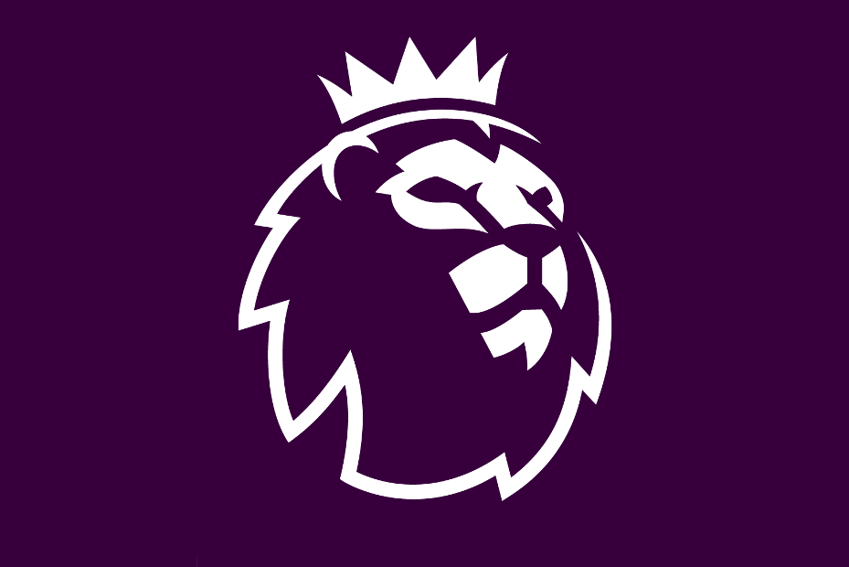

Czym jest Premier League?

English Premier League (nazywana także Premiership) – najwyższa w hierarchii klasa męskich ligowych rozgrywek piłkarskich w Anglii, będąca jednocześnie najwyższym szczeblem centralnym (I poziom ligowy), utworzona w 1992 roku i zarządzana od samego początku przez FA Premier League. Zmagania w jej ramach toczą się cyklicznie (co sezon od sierpnia do maja) i przeznaczone są dla 20 najlepszych krajowych klubów piłkarskich. Jej triumfator zostaje Mistrzem Anglii, zaś najsłabsze drużyny są relegowane do League Championship (II ligi angielskiej).
Liga została założona jako FA Premier League 20 lutego 1992 roku po tym jak zespoły Football League First Division zdecydowały stać się niezależne od The Football League powstałej w 1888 roku oraz Football Association. Czerpała ona zyski z praw telewizyjnych. Od tego czasu Premier League jest najchętniej oglądaną ligą sportową na świecie. Są to także najbardziej dochodowe rozgrywki piłkarskie. W sezonie 2007/2008 obroty klubów wyniosły 1,93 miliardów funtów (3,15 miliardów dolarów).
Od czasu założenia w rozgrywkach Premier League brały udział 44 kluby.
Schemat rozgrywek
W Premier League swoje mecze rozgrywa dwadzieścia zespołów. Podczas sezonu (który trwa od sierpnia do maja) każdy klub gra ze sobą dwukrotnie, raz na stadionie jednego z nich, a raz na stadionie drugiego - daje to 38 meczów dla każdego zespołu i 380 meczów w całym sezonie.
W soboty większość meczów rozgrywanych jest o godzinie 16:00 czasu CET. Są to mecze nietransmitowane w brytyjskiej telewizji. Czasem mecze sobotnie są rozgrywane o 13:30 i 18:30 ze względu na relację telewizyjną. Podobnie jest z meczami niedzielnymi o 14:30 lub 17:00 czasu CET, czasami są też mecze o godzinie 16:00 kiedy angielska drużyna grała wcześniej w czwartek w europejskich pucharach. Natomiast czasem jeden pojedynek kolejki odbywa się w poniedziałek o 21:00 czasu CET również ze względów telewizyjnych. Od sezonu 2016/2017 zdarza się, że mecz inaugurujący weekendową kolejkę jest rozgrywany już w piątek o 21:00 czasu CET. Zwycięska drużyna otrzymuje trzy punkty, za remis dostaje się jeden, natomiast drużyna pokonana nie dostaje żadnego punktu. Kluby są klasyfikowane w tabeli po liczbie punktów, następnie po różnicy goli (bramek zdobytych i straconych). Na końcu sezonu klub, który zgromadził najwięcej punktów, zostaje mistrzem ligi.
Mistrzowie Premier League
W dotychczasowej historii Premier League mistrzem kraju zostało 6 drużyn.
Najwięcej razy puchar wznosił Manchester United - 13 razy.
Druga w kolejności jest londyńska Chelsea - 5 razy.
Podium zamyka Manchester City - 4 triumfy.
Na czwartym miejscu znajduje się Arsenal - 3 triumfy.
Piąte i szóste miejsce zajmują Blackburn Rovers i Leicester City - po 1 triumfie.